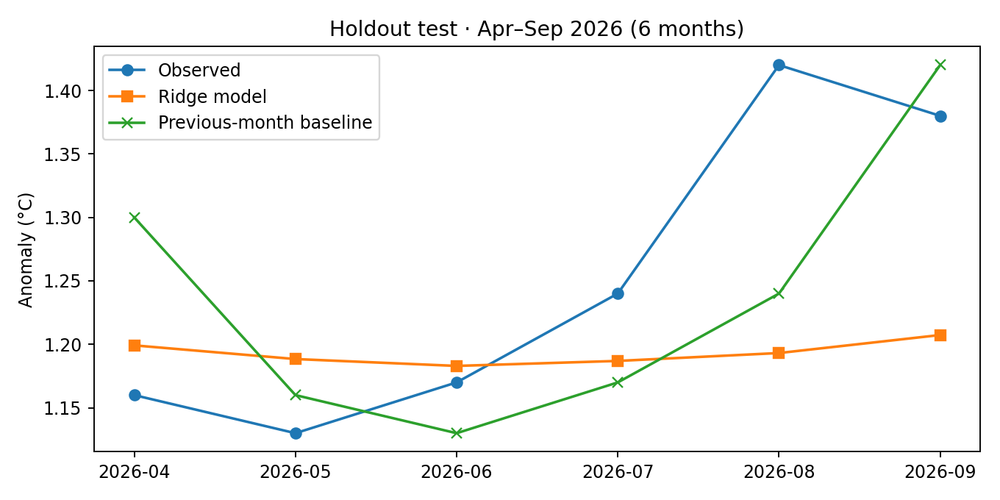

Research question
Can a simple statistical model outperform a basic climate prediction baseline?
Completed small-sample evaluation · Demonstration only
A Python Ridge regression model predicts monthly global temperature anomalies from the preceding three months, evaluated on unseen later months.
Holdout period: April–September 2026 (6 months). Ridge regression mean absolute error: 0.094°C. Simple previous-month baseline: 0.083°C.
The simple baseline performed better. Reporting that result is important: this tiny dataset is not enough to claim useful climate forecasting.

Each example uses the three previous months' anomalies. Training uses only earlier months; the final six months are held out. Ridge regression with alpha=1 is compared against predicting the previous month's value. This is a learning exercise, not a validated climate model.
Download test predictions · Download Python code
NASA GISS/GISTEMP; 24-month excerpt detailed in research notes.
Can a simple statistical model outperform a basic climate prediction baseline?
Predictive models must be compared with simple alternatives using observations not used for training.
I evaluated Ridge regression against a previous month baseline using a time ordered holdout.
The previous month baseline performed better on the six month test period in this small experiment.
The sample is too small to claim general forecasting skill. Future work needs more data and careful validation.
Open the editable research workbook in Google Sheets and the presentation in Google Slides by uploading the downloaded files to Google Drive.
Small evaluation sample; no demonstrated operational forecasting skill.
Download the published values used in this project and my presentation of the findings.
Limitations: Only six holdout months are available and the baseline outperforms Ridge.